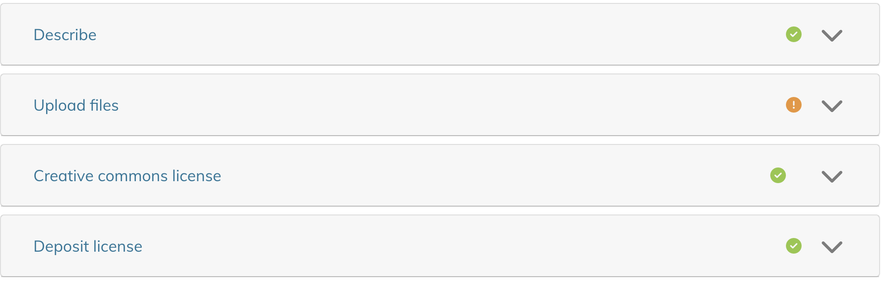

Depositing into Deep Blue Documents
How to Deposit a Work
The process for depositing a Work into Deep Blue Documents is outlined below. This process is different for U-M faculty/staff compared to students. To determine eligibility, please refer to the About page. For students, please see our Deep Blue Documents Institutional Repository for Students guide on how to get permission to deposit.
For U-M faculty and staff, please follow the steps below:
- Log in to Deep Blue Documents
- Navigate to Deep Blue Documents and click "Login" in the upper right-hand corner.
- Start a New Work
- Open your Deep Blue Documents dashboard by clicking on the menu icon in the upper left-hand corner.
- Click “Work” under "+ New” to begin a new Work deposit.

- Select a Collection
- A pop-up will appear prompting you to select a Collection.
- If a Collection(s) does appear, select your Collection and proceed to step 4.
- If a Collection does not appear, follow the steps below. Note: New users do not automatically receive these privileges - you must be granted access by a Collection Administrator.
- Review the Research Collections list to determine which Collection you’d like to be affiliated with.
- Contact your Collection Administrator or Contact Us to request access to your desired Collection.

- New Work Page
- After selecting a Collection, you will be directed to the New Work page.
- At the time the Work is deposited, Deep Blue Documents automatically assigns several pieces of metadata:
- Deposit Date
- Depositor's Name
- File Format (based on its extension)
- Permanent, unique Digital Object Identifier (DOI)
- Permanent, unique Handle

-
Provide Descriptive Information (Metadata) about your Work
To enhance discoverability, you must fill in the following details:
-
Depositor Information
- Author name(s) (First and Last)
- U-M Campus
-
Item Details
- Title
- Date of Issue
- Deposit Type (e.g., Image, Article, Book)
- File uploads
- Creative Commons License
- Terms of Deposit acceptance
- Optional metadata fields (ORCID iD, author affiliation, language, etc.) which can enhance the discoverability of your Work.
-
Depositor Information
- Check for Completion
- A green check mark will appear next to each section once all required information is entered.
- If any required section is incomplete, an orange exclamation mark will appear.
- Finalizing Your Work
- Deep Blue Documents encourages filling out both required and optional fields to maximize discoverability.
- At the bottom of the page, use the submission bar to choose from Discard, Save, Save for later, and Deposit.

- Submission Options:
- Discard: Deletes the Work and all associated metadata and files.
- Save: Saves your progress.
- Save for Later: Saves your Work as a draft (marked with an orange Draft indicator in “My Works).
- Deposit: Permanently deposits the Work. This action locks the Work and its metadata—future edits will require administrative support. If you anticipate making changes, use Save or Save for Later instead.
- View your Works
- To view your draft and deposited Works, click the profile icon in the top right corner and then select ‘My Works’
- On your My Works page, all of your deposited (flagged “Deposited” in green) and draft (flagged “Draft” in orange) Works will appear.

Collections in Deep Blue Documents
Understanding Collections
Deep Blue Documents organizes its content around Collections to simplify the process of depositing your Work and to provide you with the most flexibility for finding Work interesting to you. Schools, colleges, departments, research institutes, and other large groups can create Collections in Deep Blue Documents to group related Works at the broadest levels. Collections allow people to explore a specific area in depth, or to focus specifically on only the areas they find interesting.
Creating Collections
Only Deep Blue Documents staff have the authority to create new Collections. We strongly encourage individuals to add their Work to an existing Collection, which is designed to accommodate a wide array of scholarly materials. If you find that existing Collections don't suit your needs, please Contact Us to discuss how we can best assist you.
Remember, the Collection in which a Work is placed doesn't affect its discoverability; works are fully searchable within the repository and indexed by search engines, regardless of which Collection they are located in.
Archival Collections – Bentley Library and Research Collections
The Archival Collections – Bentley Library contains some of the Bentley Historical Library’s online materials. The Bentley Historical Library collects the materials for and promotes the study of the State of Michigan and U-M. Only archivists at the Bentley Historical Library can deposit Works into their Collections. The Research Collections are related to various schools, colleges, departments, research institutes, etc. on all three U-M campuses. U-M faculty, staff, and students may be eligible to deposit into the Research Collections.
Missing Collections While Depositing
If you can’t find a Collection in the dropdown box, you haven’t been added as a depositor to a Collection. New Deep Blue Documents users don’t automatically receive deposit privileges—your Collection Administrator must grant access. Please contact your Collection Administrator to be added. If you have any other questions, feel free to Contact Us.
Additional Information on Depositing Works
Proxy Depositing
A designated proxy is someone who is authorized to deposit on behalf of another depositor. Follow the steps below to either designate a proxy or deposit as a proxy once you're set up.
- How to Designate a Proxy
To designate a proxy, please Contact Us, specifying the name and uniqname of both the depositor and proxy. Once we receive this information, we will set up proxy access.
- Once You’re a Proxy: How to Deposit
Once you're set up as a proxy, you can follow the regular How to Deposit process. However, during the deposit process, in the field labeled “Depositing As,” select or enter the name of the depositor you are acting on behalf of.
Please note that if you’re depositing as a proxy, you must agree to additional items in the Terms of Deposit.
Accepted File Formats
Our goal of providing access to your Work means that Deep Blue Documents accepts all digital formats. However, not all formats can receive the same level of preservation support. See more detail on the Preservation page.
Note that research data primarily meant to be viewed or consumed by computers should be deposited into Deep Blue Data (See the About page for more information).
File Size Limitations
Deep Blue Documents doesn’t limit the size of files deposited. However, due to network constraints, depositing files larger than 5 GB requires Deep Blue Documents staff to deposit the Work on your behalf. (For instance, we will want to compare checksums on your file before and after deposit to verify that the file transferred correctly and completely.) We will handle these on a case-by-case basis, so please Contact Us if you plan to deposit large files.
Types of Works that aren’t Accepted
There are some Works that you may not be able to deposit or that may find a better home, either temporarily or permanently, elsewhere at U-M, such as datasets, non-U-M affiliated Works, Works in progress, etc. See more information on the About page.
Enhanced Metadata in Deep Blue Documents
The U-M Library will only assign additional metadata that can be added automatically. Assigning metadata can be time-consuming and costly, therefore we are unable to do this routinely on a per-Work basis. When the U-M Library finds that we can improve access by enhancing the information about a deposited Work or providing a new context for the Work (such as representing the Work in additional Collections beyond the one you deposited it in) or better preserve your Work by changing its format, we may do so.
Inserting Special Characters in Titles and Abstracts
You can include special characters in the title or abstract of your Work with a bit of extra effort. Be sure to use a UTF-8 or UTF-16 compatible font—'Arial' is a reliable choice for Roman characters and is widely available on both PC and Mac. The steps to insert special characters are described below:
- Mac
- Accented Characters: Press and hold a letter key (like "a") to see a menu of accented versions (e.g., à, á, â, ã). Use arrow keys to navigate and spacebar to select. You can also use the Option key with other keys for specific accents.
- Special Symbols and the Character Viewer: Access Character Viewer: Press Control + Command + Spacebar to open the Character Viewer for a wide range of symbols and special characters.
- Windows
- Using the Character Map:
- Open Character Map: Press Windows key + S, type "Character Map," and select the app.
- Find and Insert Characters: Search for and select the character, then click "Copy" and paste it into your document.
- Using Keyboard Shortcuts (Accents):
- Grave Accent: Press Ctrl + ` (key to the left of 1) then the vowel.
- Circumflex Accent: Press Ctrl + Shift + 6 then the vowel.
- Acute Accent: Press Ctrl + ' (key to the right of P) then the vowel.
- Using Alt Codes (Numeric Keypad):
- Hold the Alt key, type the numerical code on the numeric keypad, then release Alt to insert the character.
- Using the Character Map:
If you have any questions, please Contact Us.
Batch Upload Process
If you have more than twenty Works that need to be uploaded simultaneously to the same Collection, Deep Blue Documents staff can do a batch upload on your behalf. In order to do this, you will need to provide us with a structured spreadsheet containing metadata for each Work. We can help you set up a template spreadsheet and a mechanism for systematically collecting Works (including metadata) from authors. See the Terms of Deposit page for more information. Please Contact Us to learn more about the batch upload process.